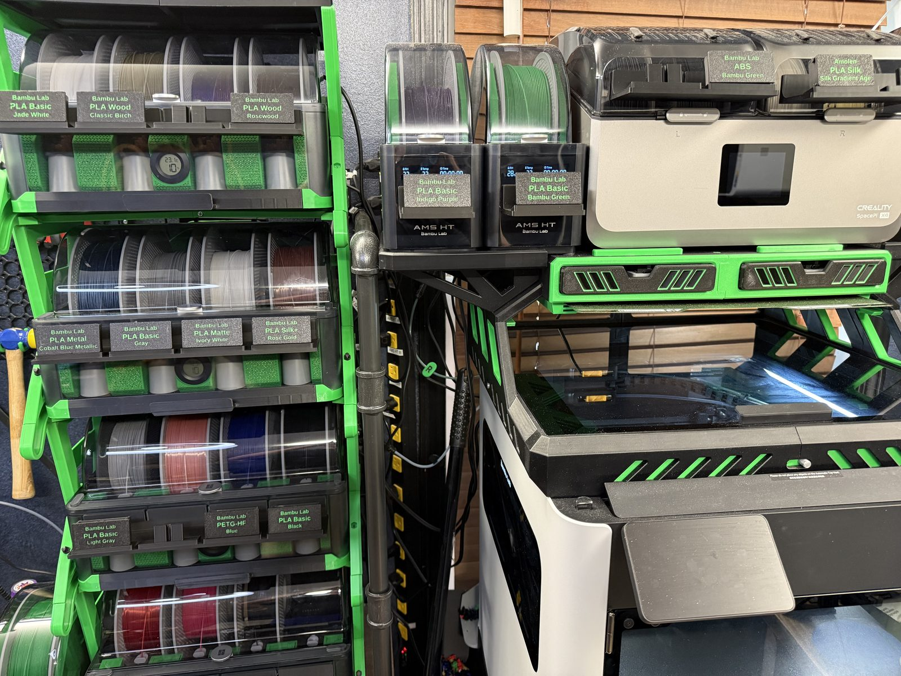
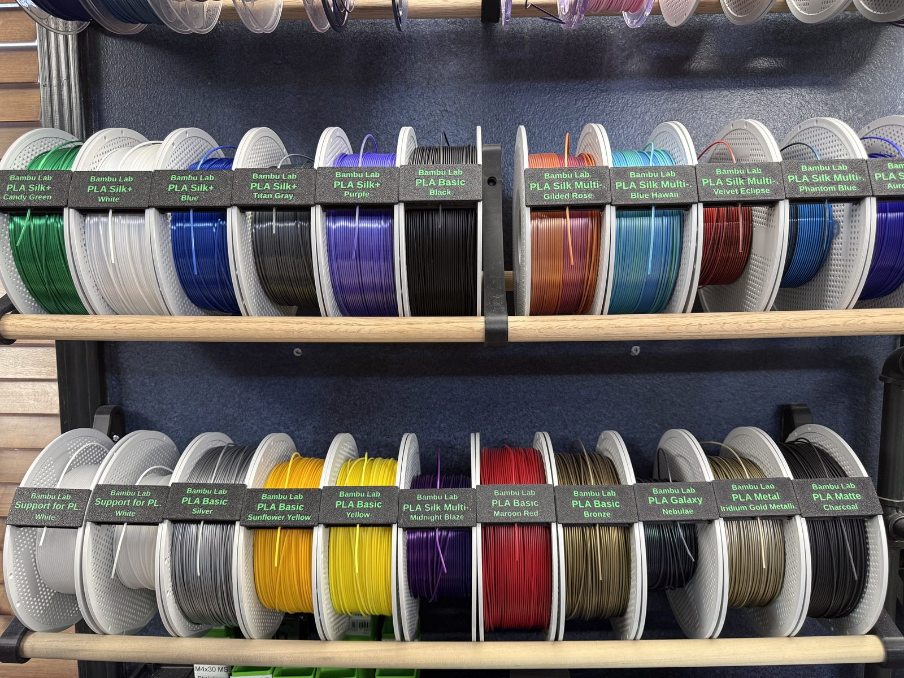
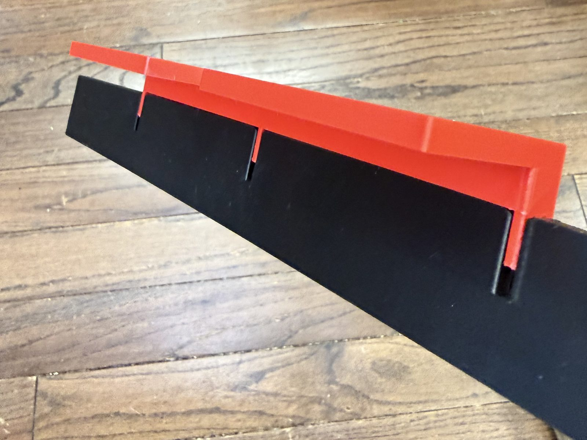
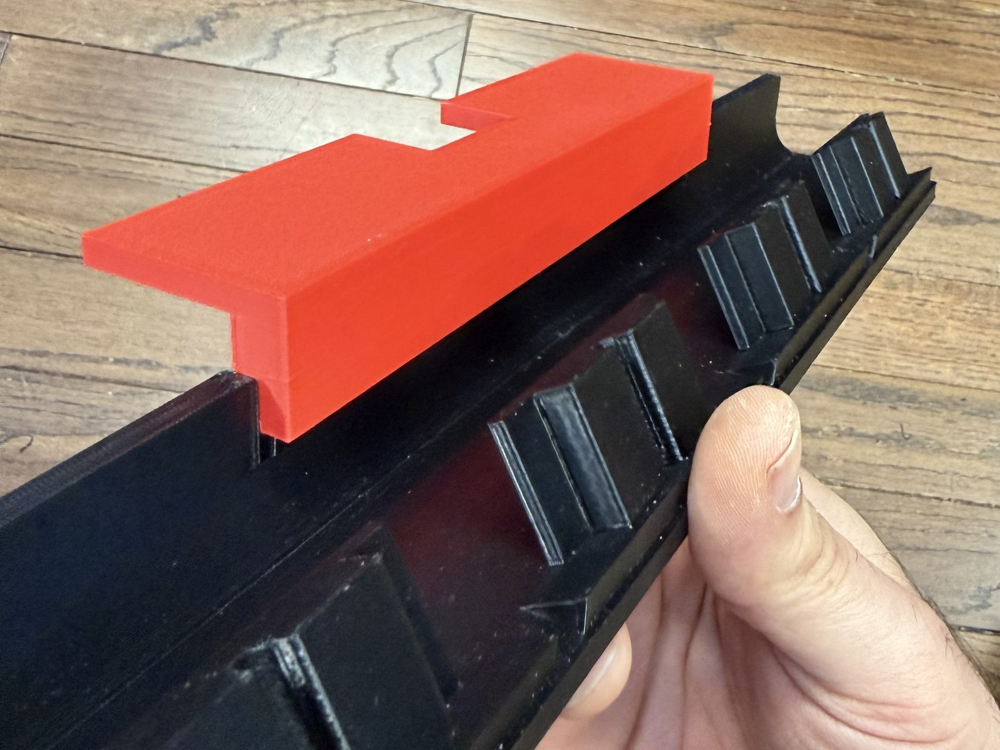
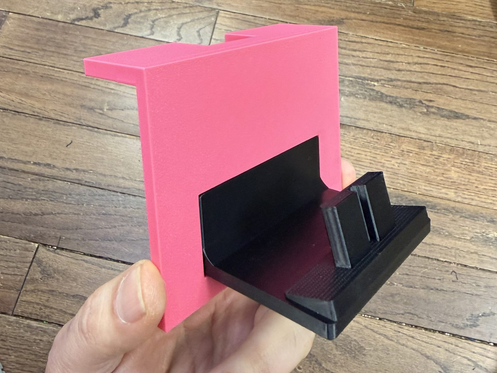
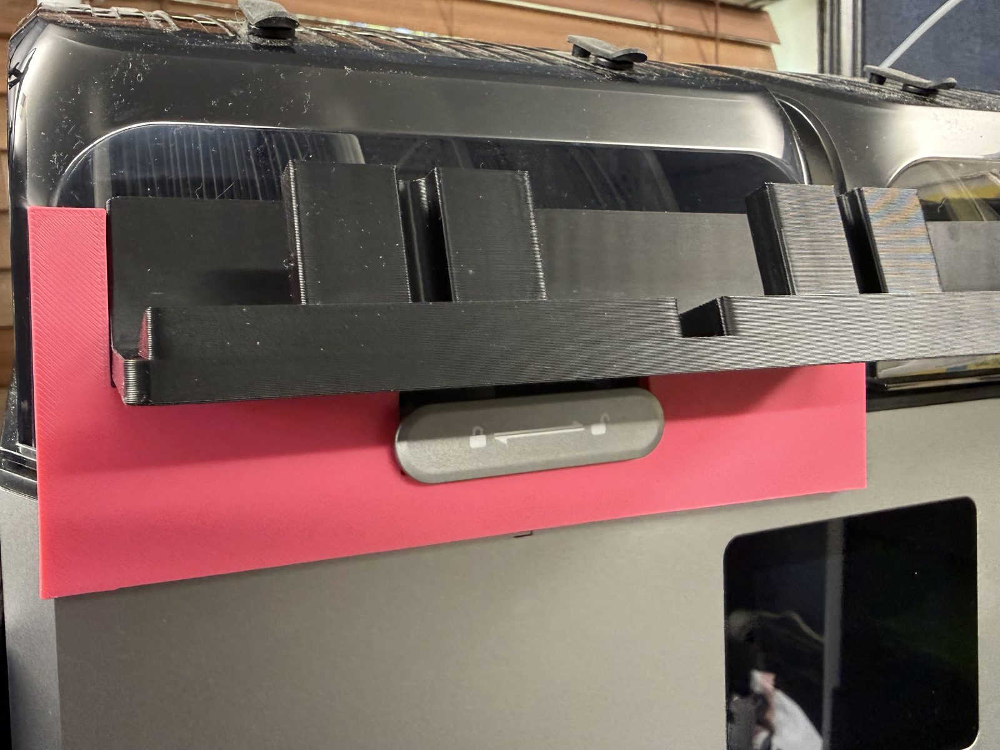

← Home
Put your labels on the machines
Clip holders mount on AMS units, filament dryers and shelves so each spool's label sits right where you load it. Mounting templates center a holder on a specific device. Print them in any filament; they are attached with 24 mm double-sided nano tape.
Easiest: in the studio, enter how many AMS HT, AMS 2 Pro and SpacePi X4 units you have. The batch then includes one template per device type and the holders each device needs: one one-post holder per AMS HT, one four-post holder per AMS 2 Pro and two two-post holders per SpacePi X4. The STLs below are for printing them on their own.
Clips that go in a holder need the holder sleeve, a collar on the clip that secures it in the holder. The studio switches it on automatically when you enter AMS or dryer units.
The holder sleeve on the clip slides into the holder and locks it in place.
In use


Clip holders
"Fits" is based on each printer's usable plate area in the studio, including diagonal placement where needed. The green bar under each picture shows the part's length to scale, against the 320 mm four-post holder.
Loading…
Mounting templates
A template is a placement guide: it sits on the device and positions the holder so it ends up centered. Bars show length to the same scale as the holders.
Loading…
Mounting a holder
You need the holder, the template for your device, 24 mm double-sided nano tape and isopropyl alcohol. Each template works a little differently, so follow the steps for your device.
For every device: clean both surfaces, the spot on the device and the back of the holder, with isopropyl alcohol and let them dry. Dry-fit before you tape, because tape is hard to reposition once it has bonded.
Bambu Lab AMS 2 Pro · one four-post holder
Mounting the four-post holder on an AMS 2 Pro.
Printing on a bed smaller than 320 mm? Use the split four-post holder: slide its two halves together at the dovetail in the middle, then follow the same steps.
The template has three narrow arms, one at each end and one in the middle. They slot into the three narrow slots in the four-post holder, locking the template onto the holder. The notch on top of the template fits over the top latch on the AMS 2 Pro, which centers the holder on the unit.
- Slot the template's three arms into the holder's three narrow slots.
- Dry-fit: set the holder on the AMS 2 Pro with the template's notch over the top latch, and check the position.
- Apply the tape to the back of the holder.
- Set it back in place with the notch over the latch and press the holder firmly onto the unit.
- Remove the template.


Bambu Lab AMS HT · one one-post holder
The notch on top of the template fits the AMS HT's top latch, and the opening in the template positions the holder.
- Place the template on the AMS HT with the notch over the top latch.
- Dry-fit: set the one-post holder in the template's opening and check the position.
- Apply the tape to the back of the holder.
- Set the holder back in the opening and press it firmly onto the unit.
- Remove the template.

Creality SpacePi X4 · two two-post holders
The template fits the SpacePi X4's locking latch, and the holder sits on top of it.
- Fit the template onto the locking latch.
- Dry-fit: rest the two-post holder on top of the template and check the position.
- Apply the tape to the back of the holder.
- Rest the holder on the template again and press it firmly onto the dryer.
- Slide the template down and off.
- Repeat for the second two-post holder.

The clips and holders are shaped to stay in place even when the lid is opened all the way.
Filament Clip Studio · browser edition · Change log